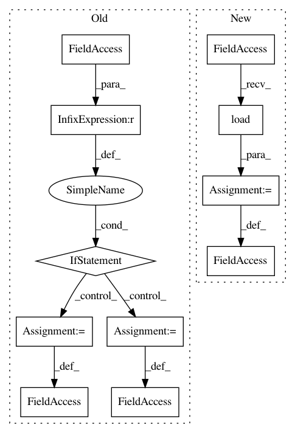

fd5fdd2507cb26d746324ae7bfd6c280580dd5e6,src/predict.py,,,#,124
Before Change
if mode == "pillow":
pred_final = predict_pillow(segmenter, imfile, h=dh, w=dw)
// pred_final.save(out_file)
elif mode == "opencv":
pred_final = predict_opencv(segmenter, imfile, h=dh, w=dw)
// res = cv2.imwrite(out_file, pred_final)
elif mode == "skimage":
pred_final = predict_skimage(segmenter, imfile, h=dh, w=dw)
// res = io.imsave(out_file, pred_final)
// break
print("")
After Change
dw = 480
dh = 480
dataset = datasets.load(dataset_name=dataset_name)
nc = dataset.num_classes()
if K.backend() == "tensorflow":
print("Tensorflow backend detected; Applying memory usage constraints")
In pattern: SUPERPATTERN
Frequency: 3
Non-data size: 11
Instances
Project Name: PavlosMelissinos/enet-keras
Commit Name: fd5fdd2507cb26d746324ae7bfd6c280580dd5e6
Time: 2017-05-04
Author: pmelissi@iti.gr
File Name: src/predict.py
Class Name:
Method Name:
Project Name: tensorflow/models
Commit Name: 855d29dba61a53553e8fc89237773368fd7e9cdf
Time: 2020-07-29
Author: sbeery@google.com
File Name: research/object_detection/dataset_tools/context_rcnn/generate_detection_data.py
Class Name: GenerateDetectionDataFn
Method Name: _load_inference_model
Project Name: HyperGAN/HyperGAN
Commit Name: cf72dcaef367bf5625aa3a83a8bce8bbe823d892
Time: 2020-02-14
Author: martyn@255bits.com
File Name: examples/experimental/next-frame.py
Class Name:
Method Name: